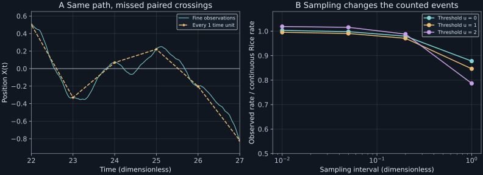

Chapter 14 · Lecture 17
Threshold crossings and extremes of smooth random signals
A thermal oscillator drives an alarm whenever its position rises through a threshold. The continuous model predicts 0.159155 zero-level upcrossings per unit time. Sampling the same model once per unit time records about 0.139688, because excursions can begin and end between observations. A false-alarm calculation must specify whether it counts physical crossings, sampled sign changes, or windows containing at least one event. They are different observables.
The chapter follows NPTEL lecture 17: threshold indicators, joint value–derivative laws, stationary Gaussian rates, the harmonic example, extrema, and a spectral bridge. Its finite-sampling laboratory and count-versus-probability counterexamples are independent teaching constructions. All crossing formulas are restricted to suitable path regularity.
14.1 Counting a level requires both value and slope L17 1:48
Let $X_t$ be a real signal and let $V_t=\dot X_t$ denote its path derivative. Assume continuously differentiable paths, a regular joint density $p_t(x,v)$, and almost surely isolated non-tangent crossings of the chosen level $u$ on the finite observation window. Here $u$ has signal units and $v$ has signal per time units. Further integrability and uniformity conditions are needed to interchange the short-time limit, integration, and expectation; assume finite crossing intensity. These hypotheses exclude Wiener motion and a bare OU coordinate.
An upcrossing at time $t$ satisfies $X_t=u$ with positive slope. In a short interval of duration $h$, a nearly linear segment with slope $v\gt0$ crosses when its starting value lies between $u-vh$ and $u$. The probability contributed by slopes in $[v,v+dv]$ is approximately $vh\,p_t(u,v)dv$. Divide by $h$ and integrate over positive slopes.
The swept-interval argument gives the local expected count to first order. Under finite-intensity domination, integrating in slope and passing to the short-interval limit yields (14.1); summing disjoint time cells and taking their limit yields the time integral. An equivalent path identity for simple crossings is $N_u=\int_{t_1}^{t_2}|\dot X_t|\delta(X_t-u)dt$: converting the delta function from value to time divides by the absolute slope, leaving unit weight per crossing. Restricting to positive slopes gives the upcrossings. The regularity assumptions ensure this formal delta identity corresponds to an integrable count. ∎
The indicator $I_t=\mathbf1_{\{X_t\gt u\}}$ jumps upward at upcrossings and downward at downcrossings. Hence $N_+-N_-=I_{t_2}-I_{t_1}$ when endpoints avoid the threshold. In a stationary process, expectation of the endpoint difference vanishes, so mean up- and downcrossing rates agree. This equality does not require symmetry about zero. Without stationarity the rate can vary with time, and (14.1) still applies with $p_t$.
The original Rice analysis, Section 3.3, equations (3.3-5) and (3.3-6), derives the directional slope integrals and states continuity and uniform-convergence qualifications. The smoothness assumptions are mathematical content, not optional footnotes attached after using a formula.
14.2 The Gaussian rate separates amplitude and time scale L17 25:26
Assume now that $X_t$ is a stationary, centered, differentiable Gaussian process satisfying the preceding regularity. Let $\sigma_X^2=\mathbb E[X_t^2]\gt0$ and $\sigma_V^2=\mathbb E[V_t^2]\gt0$ be finite. Stationarity gives $d\mathbb E[X_t^2]/dt=2\mathbb E[X_tV_t]=0$. The pair $(X_t,V_t)$ is jointly Gaussian because differentiation is a limit of Gaussian finite differences under the assumed mean-square regularity. Thus zero covariance makes them independent.
The independent Gaussian joint density at $(u,v)$ is $\exp[-u^2/(2\sigma_X^2)-v^2/(2\sigma_V^2)]/(2\pi\sigma_X\sigma_V)$. Inserting it into (14.1) leaves the integral $\int_0^\infty v e^{-v^2/(2\sigma_V^2)}dv=\sigma_V^2$. One factor $\sigma_V$ cancels the denominator. The negative-slope integral gives the same value. ∎
The exponential measures threshold height relative to typical amplitude. The prefactor has inverse-time units and measures how rapidly the process changes relative to its amplitude. Multiplying the signal by a positive constant changes both standard deviations by that factor, leaving zero-level crossing rate unchanged. Changing its time scale changes the slope variance and therefore the rate. A value histogram supplies $\sigma_X$ but cannot supply $\sigma_V$.
For a nonzero stationary mean $\mu$, replace $u$ by $u-\mu$ after centering. For non-Gaussian signals, zero covariance does not generally imply independence, and the integral of the actual joint density is required. For a nonstationary Gaussian signal, value and slope can have nonzero covariance, changing the conditional slope distribution at the threshold. Equation (14.2) must not be transplanted without those conditions.
14.3 A thermal oscillator has a finite position-crossing rate L17 22:46
Use the equilibrium inertial oscillator of chapter 11, with mass $m$, positive drag rate $\gamma$, natural angular frequency $\omega_0$, temperature $T$, and $\theta=k_BT/m$. Its position is continuously differentiable, with derivative equal to the continuous velocity. Equilibrium gives $\sigma_X^2=\theta/\omega_0^2$, $\sigma_V^2=\theta$, and independent equal-time position and velocity. Therefore
$$\nu_+(u)=\frac{\omega_0}{2\pi}\exp\left[-\frac{\omega_0^2u^2}{2\theta}\right].\tag{14.3}$$At zero threshold, total up-plus-down rate is $\omega_0/\pi$, independent of damping. That does not mean the oscillator's trajectories or crossing intervals are independent of damping. The first moment uses only equilibrium position and velocity statistics; their temporal organization depends on $\gamma$. A heavily damped trace can cross in closely grouped excursions separated by long slow changes, retaining the same mean crossing rate.
For $\omega_0=\theta=1$, the upcrossing rates at levels zero, one, and two are 0.15915494, 0.09653235, and 0.02153928. At level two, the rate is reduced by $e^{-2}$ relative to level zero. Temperature raises spatial variance and therefore increases the rate at a fixed nonzero physical threshold, while the zero-level prefactor stays fixed in this ideal thermal model.
An overdamped scalar OU approximation preserves $\sigma_X$ but loses finite derivative variance. Applying (14.3) after deleting inertia is invalid: the effective diffusion path is nondifferentiable. This is a sharp example of a reduction that preserves equilibrium and slow correlations while changing a path-sensitive observable. The alarm must specify its detector bandwidth or retain sufficient inertial dynamics.
14.4 A mean crossing count is not an alarm probability
Let $N$ be the upcrossing count in a window of duration $\Delta$, so $\mathbb E[N]=\nu_+(u)\Delta$ in stationarity. The probability of at least one upcrossing obeys $\Pr(N\geq1)\leq\mathbb E[N]$, since the indicator of a positive count is bounded by the count. Equality requires that at most one crossing occurs per window. A Poisson approximation would instead give $\Pr(N\geq1)\approx1-e^{-\nu_+\Delta}$, but its independence and rarity conditions do not follow from Rice's first moment.
For a simple counterexample, one window model has $N=1$ with probability 0.1 and zero otherwise. A second has $N=10$ with probability 0.01 and zero otherwise. Both have expected count 0.1, but their event probabilities are 0.1 and 0.01. Clustering changes the operational alarm probability by a factor of ten at identical mean rate. These abstract counts isolate information missing from a first moment; they are not asserted to be the full crossing laws of the oscillator.
The event “signal exceeds the threshold at some time” also includes windows beginning above it, even if no subsequent upcrossing occurs. Initial exceedance probability and crossing events overlap and require joint treatment. Higher crossing moments involve two-time joint laws of values and slopes. A factorial second moment counts distinct pairs; a naive double integral for $\mathbb E[N^2]$ must also include the diagonal self-count $\mathbb E[N]$. This prevents losing a term when translating delta-function notation into count variance.
14.5 Extrema demand another derivative L17 33:16
For this section, strengthen the hypotheses to twice continuously differentiable regular paths with finite extrema intensity. Let $A_t=\ddot X_t$ be acceleration and let $p(x,v,a)$ be the stationary joint density. A nondegenerate local maximum has $V=0$ and $A\lt0$. Apply the directional crossing formula to velocity rather than position: the mean rate of maxima above level $u$ is
$$\nu_{\max}(u)=\int_u^\infty dx\int_{-\infty}^0(-a)p(x,0,a)da.\tag{14.4}$$The factor $-a$ counts downcrossings of zero velocity, while integrating $x\geq u$ selects the desired heights. Minima use $a\gt0$ instead. Tangencies with vanishing curvature need separate regularity control. The original Brownian oscillator has continuous but nondifferentiable velocity, so its acceleration is a generalized-noise quantity; (14.4) cannot be applied to it without further smoothing.
For a centered stationary Gaussian signal with enough smoothness, define variances $\sigma_X^2$, $\sigma_V^2$, and $\sigma_A^2$. Differentiating the stationary equal-time identities yields $\mathbb E[XV]=0$, $\mathbb E[VA]=0$, and $\mathbb E[XA]=-\sigma_V^2$. Thus the covariance matrix of $(X,V,A)$ is
$$C=\begin{pmatrix}\sigma_X^2&0&-\sigma_V^2\\0&\sigma_V^2&0\\-\sigma_V^2&0&\sigma_A^2\end{pmatrix}.\tag{14.5}$$Value and acceleration are generally correlated. A product of three independent Gaussian densities would therefore give incorrect height-selective extrema statistics. Positive definiteness requires $\sigma_X^2\sigma_A^2\gt\sigma_V^4$ for a nonsingular density; equality identifies a degenerate spectral case that needs its own treatment.
If all maximum heights are counted, integrate out $X$ first. The remaining Gaussian pair $(V,A)$ is independent, so the same one-sided integral gives total maxima rate $\sigma_A/(2\pi\sigma_V)$. For a smooth covariance $C_X(\tau)=\exp[-\tau^2/(2\ell_t^2)]$ with positive time scale $\ell_t$, its derivatives give $\sigma_V^2=1/\ell_t^2$ and $\sigma_A^2=3/\ell_t^4$. The total maxima rate is then $\sqrt3/(2\pi\ell_t)$. This example has the extra smoothness that the inertial oscillator lacks.
14.6 High frequencies control derivative statistics L17 44:23
Define centered covariance $C_X(\tau)=\mathbb E[X_{t+\tau}X_t]$ and use the book's two-sided angular-frequency convention $S_X(\omega)=\int_{-\infty}^{\infty}C_X(\tau)e^{i\omega\tau}d\tau$. Its inversion has factor $1/(2\pi)$. This convention differs by a constant factor from the lecture's displayed normalized transform, so formulas must be converted consistently. Under differentiation and inversion integrability conditions,
$$\sigma_X^2=\int\frac{d\omega}{2\pi}S_X(\omega),\quad \sigma_V^2=\int\frac{d\omega}{2\pi}\omega^2S_X(\omega),\quad \sigma_A^2=\int\frac{d\omega}{2\pi}\omega^4S_X(\omega).\tag{14.6}$$Each derivative adds weight to high frequencies. An OU spectrum falls as $\omega^{-2}$, which gives finite signal variance but divergent derivative variance. An inertial oscillator position spectrum falls as $\omega^{-4}$: its first derivative variance is finite, while its second derivative variance diverges. Smoothing can make these moments finite, but it also changes the crossing and extrema rates being measured.
Finite spectral moments are useful mean-square regularity conditions; they do not alone establish every pathwise hypothesis used in the crossing theorem. Chapter 16 derives the spectral normalization and filtering rule. In an alarm chain, specifying the transfer function and sampling interval is part of specifying the observable, not a cosmetic choice in plotting a fixed signal.
14.7 Laboratory: distinguish crossings from sampled signs
The laboratory generates 512 equilibrium oscillator paths for duration 200 each, with $\theta=\omega_0=1$, $\gamma=0.8$, and fine step 0.01. Exact linear-Gaussian phase-space updates use a matrix exponential and correlated noise covariance, avoiding an Euler equilibrium bias. It counts sampled transitions from below to above each threshold, then repeats on coarser subsequences of the same paths. These counts can miss an even number of crossings between observations.
Run python code/ch14_crossings.py. It uses seed 2026110814 and writes JSON and text output beside the program, without a network call. In addition to continuous Rice targets, JSON records the exact sampled-endpoint rate obtained from the bivariate Gaussian law at lag $h$. That distinguishes finite-sampling bias from Monte Carlo scatter. The finite-step count is a lower-resolution observable, not a purported exact continuous crossing counter.
step upcrossing rates at levels 0, 1, 2 0.01 0.15965820, 0.09607422, 0.02194336 0.05 0.15879883, 0.09561523, 0.02187500 0.20 0.15589844, 0.09371094, 0.02127930 1.00 0.13968750, 0.08168945, 0.01694336 Continuous Rice rates: 0.15915494, 0.09653235, 0.02153928

import numpy as np
def sampled_upcrossings(values, threshold):
values = np.asarray(values)
if values.ndim != 1:
raise ValueError("one sampled path required")
return np.count_nonzero(
(values[:-1] < threshold) & (values[1:] >= threshold)
)The function returns an integer for a one-dimensional record and fixed threshold; it writes no files. An equality convention is explicit. A continuous Gaussian sample has zero probability of exactly equaling a fixed threshold, but quantized real measurements can have ties and need a deliberate event convention. Missing observations and hysteresis are outside this minimal counter.
14.8 What a crossing rate establishes
Rice's first moment converts a regular value–slope density into an expected event count. Gaussianity and stationarity simplify that density but do not make events Poisson. Nonstationary rates, clustered events, initial exceedance, sampling loss, and detector smoothing must be treated at the level of the actual alarm definition. Extrema add a derivative requirement and cannot be inferred from the mere continuity of a signal's first derivative.
14.9 Exercises with worked solutions
Exercise 14.1 — Equal rates without reflection symmetry (conceptual)
Why do stationary up- and downcrossing mean rates agree at any regular level, even for a skewed signal distribution?
Worked solution
The pathwise count difference is the difference of endpoint exceedance indicators. Stationarity makes their expectations equal, so the expected count difference is zero. Under finite-intensity stationarity, each expected count is its rate times window duration, giving equal rates. The argument uses no reflection of $X$ about zero and does not require a Gaussian law. It does require the specified ordinary-crossing convention and excludes pathological infinite counts.
Exercise 14.2 — Why not count OU extrema? (conceptual)
A scalar OU trace is continuous and stationary. Is that sufficient for either (14.2) or the twice-differentiable extrema formula?
Worked solution
No. Its covariance has a cusp at zero and its high-frequency spectrum falls as $\omega^{-2}$. Multiplication by $\omega^2$ gives a nonintegrable derivative spectrum, so finite derivative variance fails. There is no ordinary derivative random variable with the density assumed in (14.1). The extrema formula needs still another derivative. Filtering can define a smoother observed signal, but its rates belong to that filtered process and depend on the filter.
Exercise 14.3 — Nonzero mean and amplitude rescaling (derive)
For $Y_t=cX_t+\mu$ with $c\gt0$ and centered stationary Gaussian $X$, derive the upcrossing rate at level $u$.
Worked solution
The transformed level is $(u-\mu)/c$. Also $\sigma_Y=c\sigma_X$ and $\sigma_{\dot Y}=c\sigma_V$, so their ratio is unchanged. Substitution into (14.2) gives $\sigma_V\exp[-(u-\mu)^2/(2c^2\sigma_X^2)]/(2\pi\sigma_X)$. At its mean level $u=\mu$, amplitude scaling cancels entirely. At a fixed physical threshold it changes the exponential factor, because the threshold's normalized distance has changed.
Exercise 14.4 — The value–acceleration covariance (derive)
Derive the off-diagonal entry in (14.5) and explain its effect on maxima height.
Worked solution
Stationarity gives $\mathbb E[XV]=0$. Differentiating in time yields $0=\mathbb E[V^2+XA]$, so $\mathbb E[XA]=-\sigma_V^2$. In a Gaussian model, the conditional acceleration mean given $X=x$ is therefore $-\sigma_V^2x/\sigma_X^2$, after the independent zero-velocity condition is included. High positive values favor negative curvature. Replacing the joint density by three independent marginals would remove this dependence and mispredict how maxima heights are distributed, although an all-height marginal count can still be simpler.
Exercise 14.5 — A bound for one alarm window (compute/design)
For the normalized thermal oscillator at threshold two, bound the probability of at least one upcrossing in a window of duration five. What extra claim would a Poisson approximation introduce?
Worked solution
Equation (14.3) gives rate $e^{-2}/(2\pi)=0.02153928$, so mean count in five units is about 0.1076964. The probability of at least one is at most that number. A Poisson approximation would replace the bound by $1-e^{-5e^{-2}/(2\pi)}$, requiring a model for event dependence and rarity. Rice's expectation alone does not justify that replacement. If the alarm asks whether the signal is ever above two, initial exceedance must be included as a different component of the event.
Exercise 14.6 — Verify the sampled zero-level target (compute/design)
At sampling interval $h$, two standardized Gaussian endpoints have correlation $r=f(h)$. Show how their sign-change probability checks the sampled zero-level rate.
Worked solution
For a centered bivariate unit Gaussian pair, rotational symmetry of independent standard Gaussian coordinates gives the probability of opposite signs as $\arccos(r)/\pi$; the angular wedges between the two zero-projection lines have that total angular fraction. Half correspond to a negative-to-positive transition. Thus the expected sampled upcrossing rate is $\arccos(f(h))/(2\pi h)$. For differentiable oscillator position, $f(h)=1-\omega_0^2h^2/2+o(h^2)$, and $\arccos(1-z)\sim\sqrt{2z}$ recovers $\omega_0/(2\pi)$ as $h\downarrow0$. The bivariate Gaussian CDF in the lab evaluates the more general nonzero-threshold target. Compare the simulation with this finite-$h$ target before attributing a discrepancy to the continuous formula.
14.10 Sources and attribution
- V. Balakrishnan, NPTEL lecture 17, course 115106089.
- S. O. Rice, Mathematical Analysis of Random Noise, Bell System Technical Journal 24 (1945), continuation of the 1944 paper. Primary-paper reprint scan, Section 3.3, equations (3.3-5), (3.3-6), (3.3-11), and (3.3-14), scan pages 58–61: directional crossing integrals, Gaussian zero/level crossing results, and regularity limitations. The chapter rederives its displayed formulas in the book's angular-frequency convention.